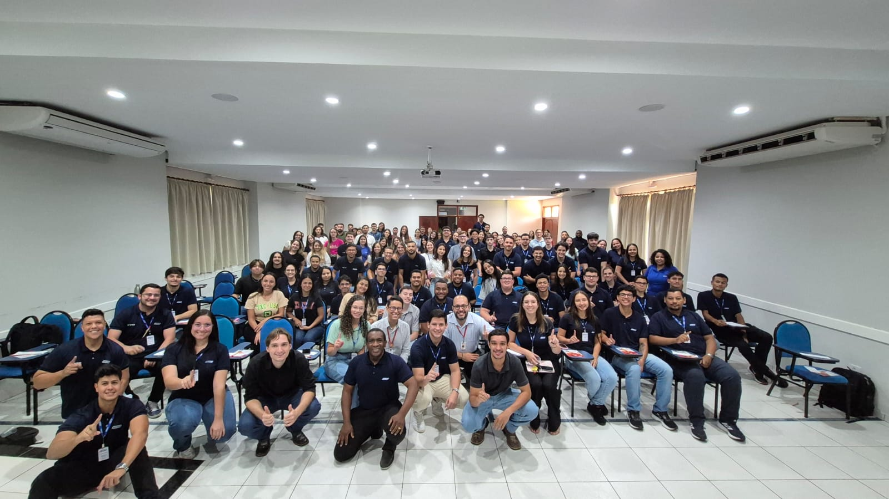
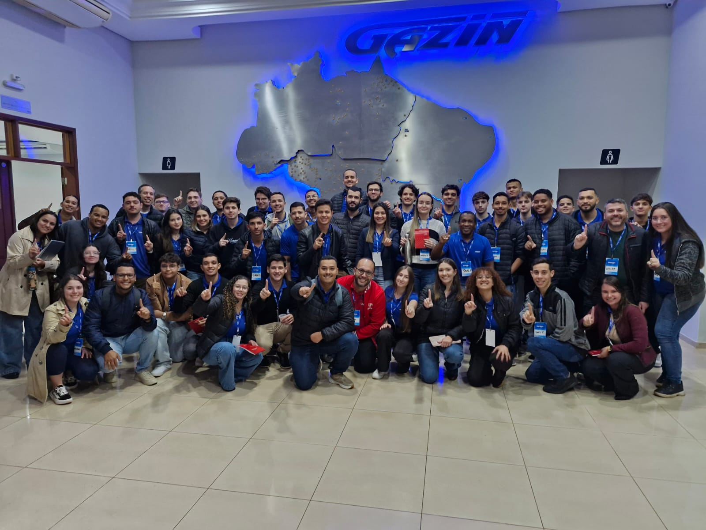
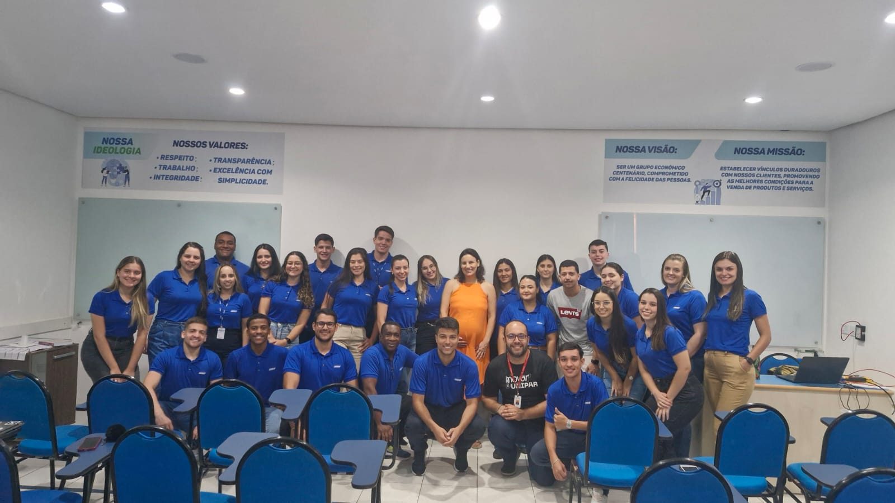
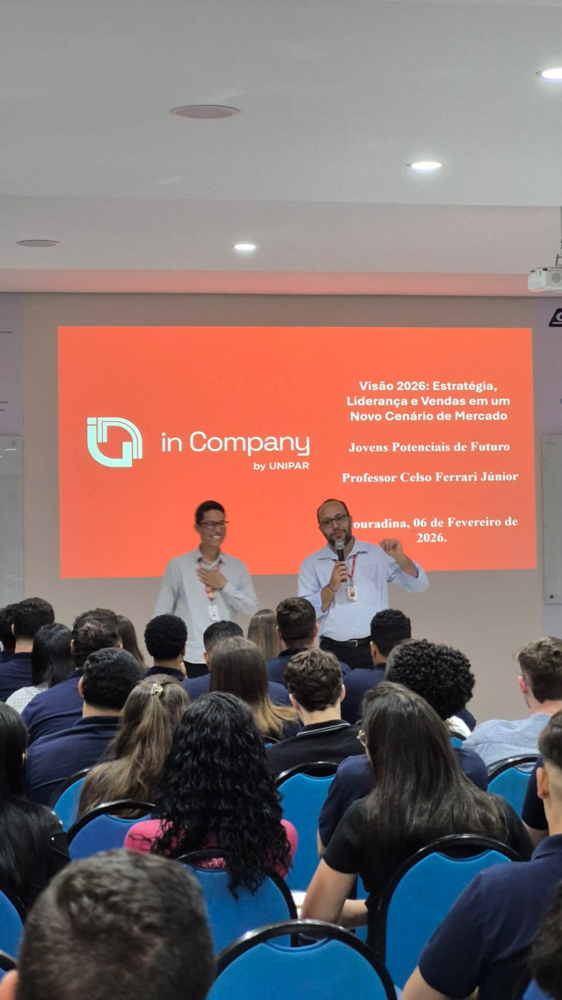
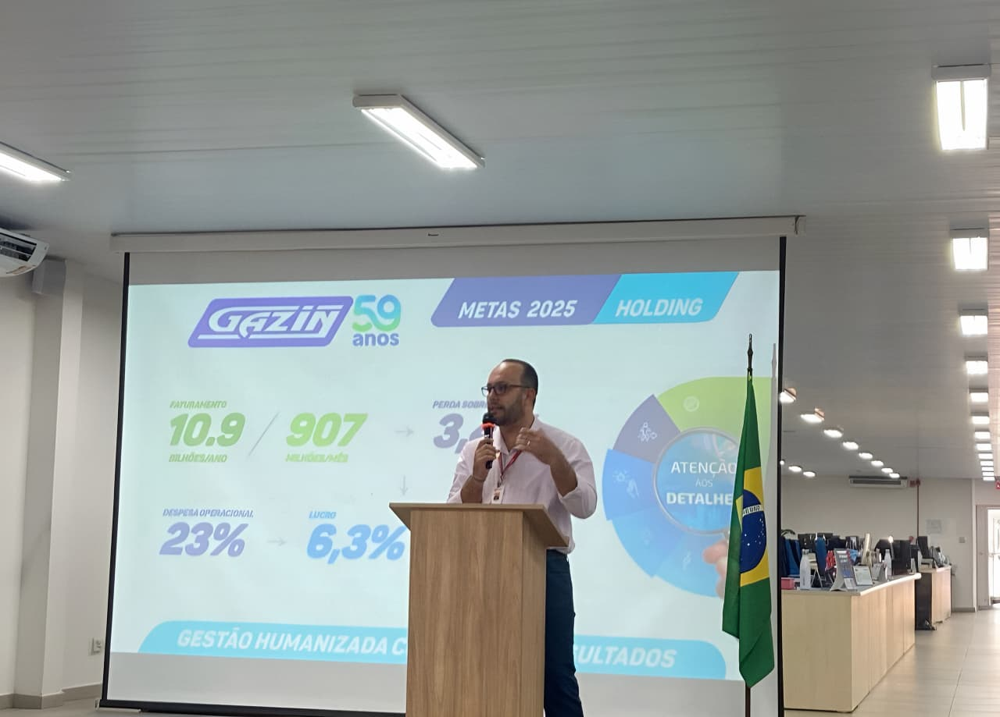
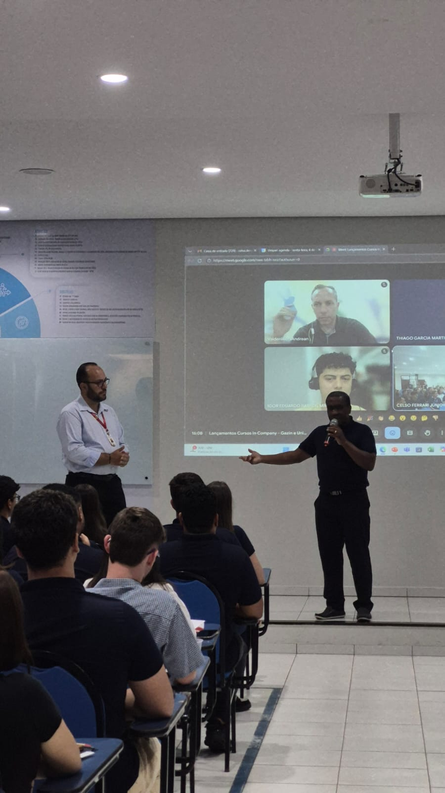
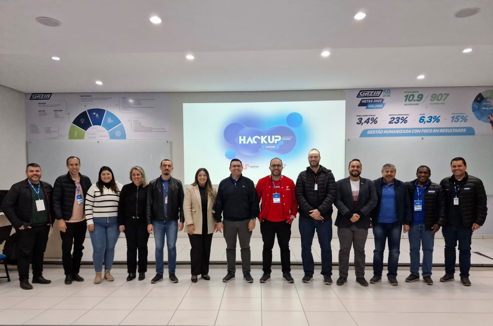
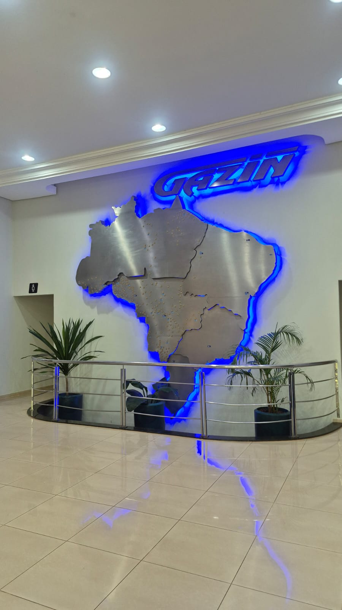
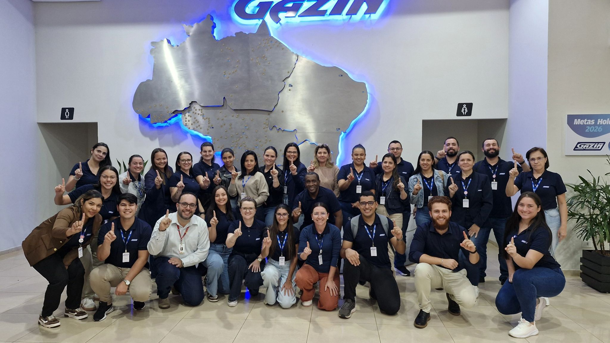
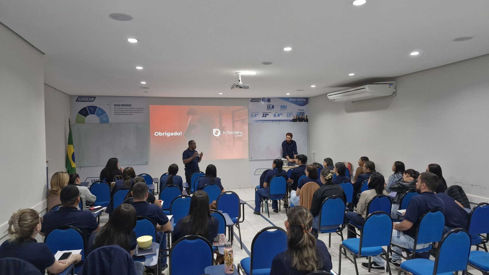

Gazin
Programa desenvolvido pela Unipar In Company, em parceria com a Fundação Cândido Garcia e a Gazin, reunindo iniciativas de formação, capacitação profissional, inovação e desenvolvimento de talentos.

O desenvolvimento de profissionais exige mais do que treinamentos pontuais. É necessário criar experiências de aprendizagem capazes de conectar conhecimento, prática, estratégia e os desafios reais do ambiente corporativo.
É com essa perspectiva que a Unipar In Company vem construindo uma parceria com a Gazin, desenvolvendo programas e capacitações voltados ao fortalecimento das competências profissionais, à formação de lideranças, ao desenvolvimento de jovens talentos e à melhoria dos processos organizacionais.
A parceria reúne a experiência da Gazin na gestão e desenvolvimento de pessoas, a atuação acadêmica da Unipar In Company e o apoio da Fundação Cândido Garcia, criando iniciativas de educação corporativa alinhadas às necessidades da organização.
Ao longo dessa trajetória, diferentes programas foram desenvolvidos para públicos e áreas distintas, envolvendo colaboradores, gestores, jovens potenciais e jovens aprendizes.
A atuação conjunta entre Gazin, Unipar In Company e Fundação Cândido Garcia contempla diferentes frentes de desenvolvimento profissional.
Entre as iniciativas realizadas estão programas de formação de jovens, capacitações técnicas, treinamentos para gestores, projetos de inovação e cursos voltados ao aperfeiçoamento de competências estratégicas.
Essa diversidade permite que a educação corporativa seja aplicada em diferentes momentos da trajetória profissional, desde a preparação de jovens talentos até o desenvolvimento de profissionais responsáveis por decisões estratégicas dentro da organização.

Um dos principais projetos desenvolvidos em parceria com a Gazin é o Programa Jovens Potenciais de Futuro, iniciativa voltada ao desenvolvimento de jovens colaboradores e à preparação de profissionais para novos desafios dentro da organização.
O programa trabalha competências relacionadas à gestão, liderança, estratégia, inovação, comportamento profissional e tomada de decisão, criando um ambiente de aprendizagem no qual os participantes são estimulados a desenvolver uma visão mais ampla sobre o negócio.
Ao longo das edições, aproximadamente 80 colaboradores participaram de diferentes atividades de formação, enquanto a edição de 2026 reúne cerca de 120 colaboradores.
A proposta vai além da capacitação técnica. O programa busca identificar e desenvolver talentos com potencial para assumir, no futuro, posições de maior responsabilidade, contribuindo para a formação de profissionais preparados para os desafios estratégicos da Gazin.
A formação utiliza atividades práticas, troca de experiências e aplicação dos conhecimentos em situações relacionadas à realidade profissional.

Outra iniciativa desenvolvida com a Gazin é o Programa Codifica Jovem, voltado à formação de jovens aprendizes.
O programa foi estruturado para ampliar o domínio de ferramentas e competências cada vez mais importantes no ambiente profissional, preparando os participantes para apoiar equipes e gestores em atividades relacionadas à tecnologia, produtividade e análise de informações.
A iniciativa combina conhecimento técnico e desenvolvimento profissional, criando oportunidades para que os jovens ampliem suas competências e estejam mais preparados para as transformações do mercado de trabalho.

A parceria também contempla capacitações direcionadas a áreas específicas da organização.
Entre elas, destacam-se os treinamentos de Análise de Crédito e Gestão de Riscos nas Operações Comerciais, com conteúdos relacionados à viabilidade econômica, fluxo de caixa, análise e concessão de crédito e planejamento financeiro.
Em outra iniciativa, o Curso de Análise de Crédito trabalhou especificamente a Concessão de Crédito para Pessoas Físicas, envolvendo aproximadamente 80 colaboradores do Departamento de Crédito e Cobrança da Gazin.
Essas formações têm como objetivo fortalecer a capacidade técnica dos profissionais e contribuir para decisões mais assertivas, gestão de riscos e resultados sustentáveis.

A formação de gestores e profissionais também ocupa espaço importante na parceria.
Foram desenvolvidas capacitações relacionadas a:
Em uma das iniciativas, aproximadamente 100 colaboradores, entre vendedores, gerentes e gerentes adjuntos de diferentes unidades da Gazin, participaram de uma formação voltada à Gestão de Conflitos e Cultura de Alta Performance.
A proposta é fortalecer competências comportamentais e de gestão, contribuindo para ambientes profissionais mais colaborativos, eficientes e preparados para alcançar resultados.

Um dos momentos de maior integração entre conhecimento, criatividade e desafios empresariais foi a realização do HackUp Gazin | Unipar.
Realizado em Douradina, o evento reuniu aproximadamente 80 colaboradores, organizados em equipes para desenvolver ideias, projetos, produtos e serviços com potencial de gerar soluções para desafios da Gazin.
A iniciativa utilizou uma abordagem de inovação aplicada, estimulando:
O HackUp representou uma experiência de aprendizagem ativa, aproximando ainda mais a universidade e a empresa e demonstrando como conhecimento, criatividade e colaboração podem ser utilizados para construir soluções concretas.

A parceria também contempla projetos direcionados à melhoria de processos e ao fortalecimento da gestão.
Entre as iniciativas desenvolvidas estão treinamentos de Gestão de Projetos, Planejamento Estratégico, Estruturação de Projetos, Avaliação do ROI e Decisão Estratégica por Indicadores Financeiros, além de capacitações relacionadas a Licitações, Compliance, Logística e Assistência Técnica.
No treinamento de análise de causas aplicado às áreas de Logística e Assistência Técnica, foram utilizadas ferramentas como:
A aplicação dessas ferramentas aproxima a formação acadêmica dos desafios cotidianos da organização, permitindo que os participantes utilizem o conhecimento para analisar situações reais e buscar melhorias nos processos.

Um dos diferenciais das iniciativas desenvolvidas pela Unipar In Company junto à Gazin está na aproximação entre conteúdo e prática.
Os programas são construídos para que os participantes não sejam apenas receptores de informação, mas protagonistas do processo de aprendizagem.
Aulas, atividades práticas, estudos de situações reais, desafios, projetos colaborativos e experiências de inovação permitem que os conhecimentos sejam relacionados diretamente ao cotidiano profissional.
Essa abordagem favorece o desenvolvimento de competências técnicas, comportamentais e estratégicas, criando uma experiência educacional conectada às necessidades da organização.
A realização dessas iniciativas representa uma parceria construída com foco no desenvolvimento de pessoas e organizações.
A Gazin aproxima os programas de sua realidade empresarial, apresentando desafios, necessidades e oportunidades de desenvolvimento.
A Unipar In Company contribui com sua estrutura acadêmica, professores, especialistas e metodologias de aprendizagem aplicadas ao ambiente corporativo.
A Fundação Cândido Garcia integra essa construção, fortalecendo o apoio institucional e a realização das iniciativas de formação e desenvolvimento.
Essa união permite transformar conhecimento acadêmico em experiências práticas de aprendizagem, aproximando universidade e empresa em torno de objetivos comuns.
A formação em Análise e Concessão de Crédito para Pessoa Jurídica proporcionou à equipe do Departamento de Crédito e Cobrança da Gazin dois dias de aprendizado, reflexão e troca de experiências, aprofundando conhecimentos relacionados à análise e concessão de crédito para empresas.
Conduzida pelo professor Gustavo Smith, a capacitação também promoveu uma reflexão sobre a responsabilidade do profissional de crédito e a importância de decisões mais conscientes para a sustentabilidade e o desenvolvimento das operações comerciais.
A iniciativa aproximou conhecimento acadêmico e prática profissional, fortalecendo competências importantes para a análise de cenários, avaliação de riscos e tomada de decisões no ambiente corporativo.
Mais uma vez, a parceria entre a Gazin, a Unipar In Company e a Fundação Cândido Garcia demonstra como a educação corporativa pode contribuir para desenvolver pessoas e preparar profissionais para os desafios do mercado.


A trajetória construída entre Gazin, Unipar In Company e Fundação Cândido Garcia demonstra como a educação corporativa pode ser utilizada como ferramenta estratégica para desenvolver pessoas, fortalecer competências e preparar organizações para novos desafios.
Dos jovens aprendizes aos gestores, dos programas de formação aos projetos de inovação, as iniciativas desenvolvidas buscam criar oportunidades concretas de aprendizagem e evolução profissional.
Mais do que capacitar profissionais para o presente, a parceria contribui para preparar talentos para o futuro, fortalecendo uma cultura baseada em educação, inovação, desenvolvimento humano e melhoria contínua.
Gazin + Unipar In Company + Fundação Cândido Garcia. Uma parceria para desenvolver pessoas, transformar conhecimento em prática e construir o futuro das organizações.
Unipar In Company — Educação que transforma conhecimento em evolução.
Celso Ferrari Júnior, coordenador da Unipar In Company, apresenta o projeto desenvolvido para a Gazin, destacando sua proposta, atuação e iniciativas de desenvolvimento profissional.